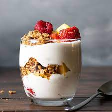

>
Honey and Fruit Yogurt Parfait
This is the ideal sweet treat and healthy breakfast for any and all!

This is a no hassle, no bake recipe that's easy to make and a swiss army knife of a snack/breakfast
It's delicious, nutritious, and the ideal meal right down to the last bite!
Here is what you'll need:
- Berries: Strawberries, Blueberries, blackberries, raspberries.
- Yogurt. Preferably Greek. Health probiotics are always a nice add!
- Granola or oats. Quick oats work better to soften in the fridge, but Granola is sweeter
- Honey. A honey from your local apiary adds a nice touch.
- A wide bottomed cup or glass. A small glass bowl can work as well

Now let's dive in to what to do:
- Fill the bottom quarter of your bowl with your yogurt
- Add a mixture of oats and berries on to the yogurt
- Drizzle some honey across the oats/granola and berry mixture on the yogurt
- Add another quarter of yogurt on top of the mixture
- Sprinkle more berries and oats/granola
- Drizzle more honey on top
- let the mixture sit in the fridge over night to solidify up the recipe
- Pull out of the fridge the next day and enjoy with a spoon!
It's just that easy. It's the perfect snack, or small meal to start the day!